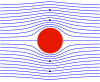

streamfunction

Definition: The stream function is defined for incompressible (divergence-free) flows in two dimensions – as well as in three dimensions with axisymmetry. The flow velocity components can be expressed as the derivatives of the scalar stream function. The stream function can be used to plot streamlines, which represent the trajectories of particles in a steady flow. The two-dimensional Lagrange stream function was introduced by Joseph Louis Lagrange in 1781. The Stokes stream function is for axisymmetrical three-dimensional flow, and is named after George Gabriel Stokes.Considering the particular case of fluid dynamics, the difference between the stream function values at any two points gives the volumetric flow rate (or volumetric flux) through a line connecting the two points.
Source: Wikipedia
Wikipedia Page (Something wrong with this association? Let us know.)
Wikidata Page (Something wrong with this association? Let us know.)